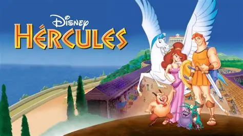
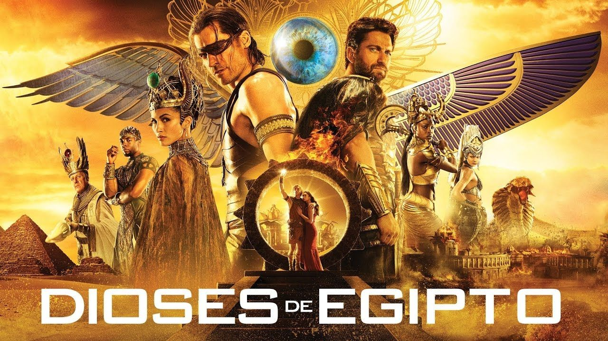
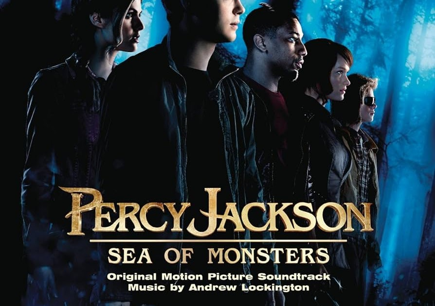
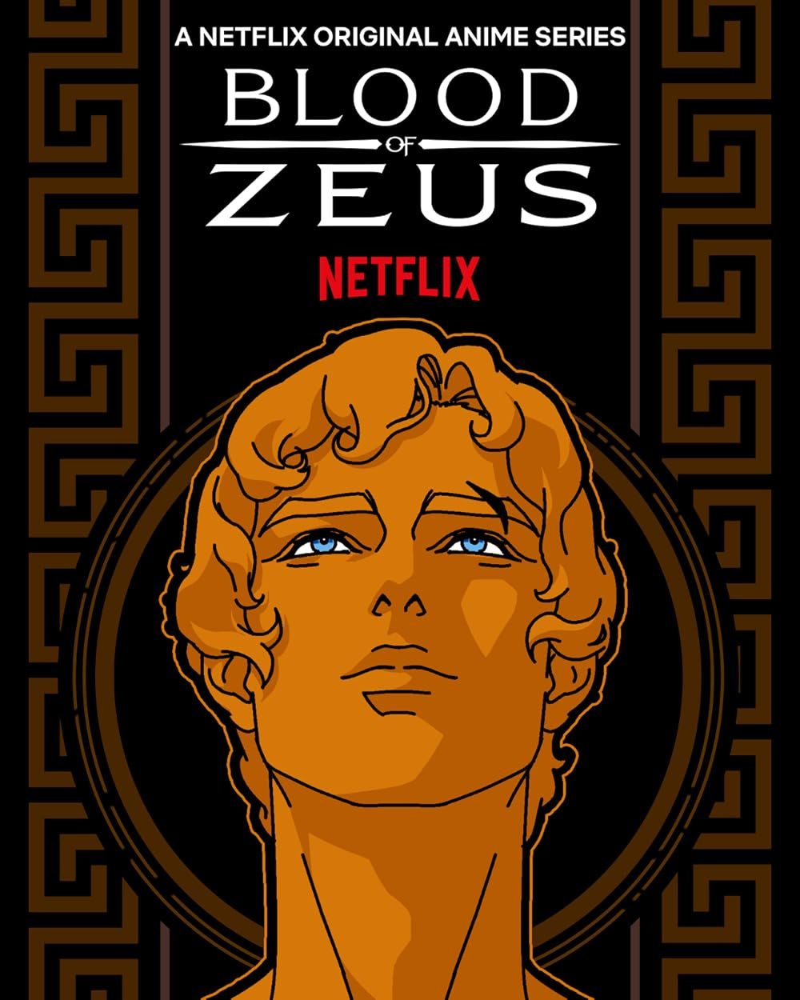
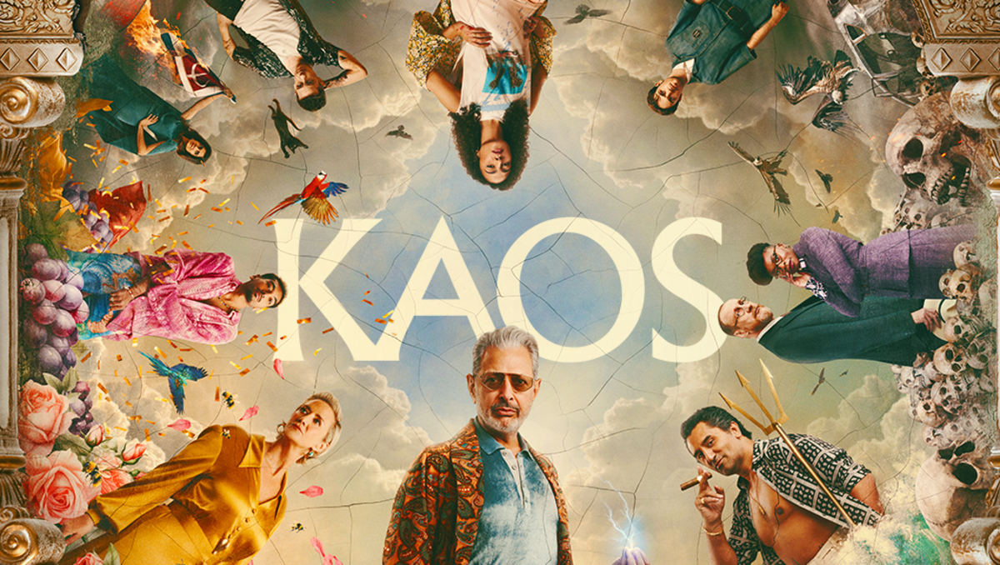
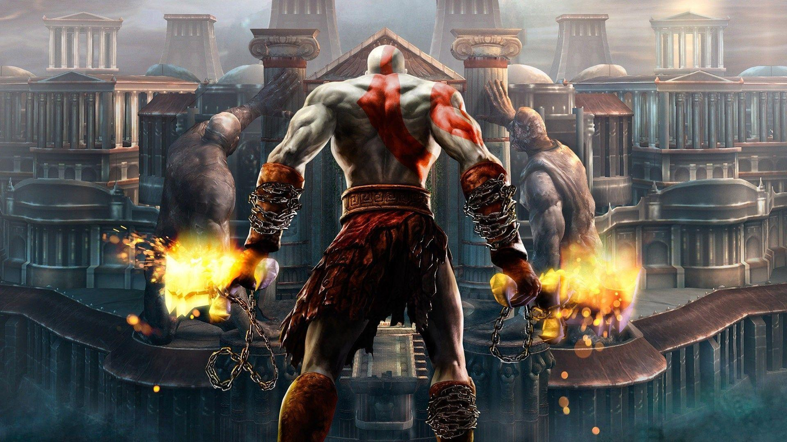
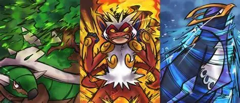
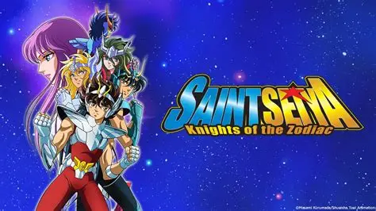
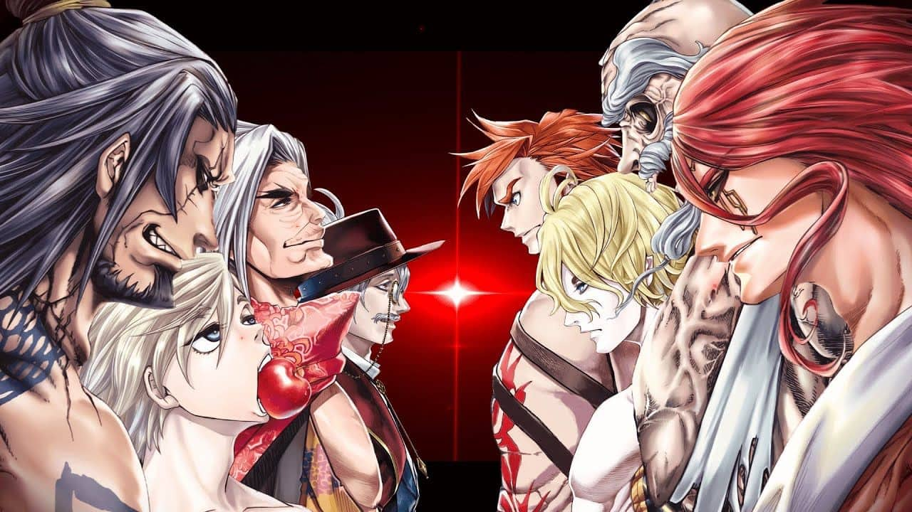

Adaptaciones Mitológicas
🎬 Películas
Hércules
Seguramente una de las películas que más ha despertado el interés de las generaciones más jóvenes en la mitología. Esta película toma como inspiración una estructura similar a la de la película de Superman de 1978, mostrando el camino de Hércules para convertirse en un héroe verdadero y así recuperar su lugar entre los dioses.
Dioses de Egipto
Esta adaptación cinematográfica se inspira en los mitos de Horus luchando contra su tío Seth para recuperar el trono de Egipto, después de que Seth asesinara a Osiris. La película toma un rumbo diferente, mostrando a un Seth más tirano y buscando partes o armas de otras deidades para cumplir su objetivo.
Percy Jackson
En este caso, hablamos de varias sagas de películas y libros centradas en Percy, un nuevo hijo de Poseidón que vive numerosas aventuras. Es una de las adaptaciones mitológicas más famosas de la era moderna.
📺 Series
Blood of Zeus
Esta serie animada de Netflix presenta una historia original sobre un nuevo héroe, hijo de Zeus, que enfrenta antiguas amenazas junto a los dioses.
KAOS
KAOS muestra una versión moderna y adaptada de los mitos griegos en la era actual. Presenta un Zeus más paranoico respecto al destino y reinterpreta tres mitos clásicos: el de Orfeo, el del Minotauro y el de Céneo.
🎮 Videojuegos
God of War
Seguramente la saga de videojuegos mitológicos más famosa. Relata la historia del Fantasma de Esparta en su camino de venganza contra monstruos, titanes y dioses. Con el tiempo, la saga evoluciona y cambia de mitología.
Assassin's Creed
Uno de los RPG más reconocidos del mundo. Sus entregas han llevado a los jugadores a explorar en profundidad las tres mitologías más populares: la griega, la egipcia y la nórdica.
Pokémon
Este famoso videojuego también incluye diversas referencias mitológicas reflejadas en criaturas inspiradas en dioses y leyendas, como Empoleon (Poseidón), Infernape (Sun Wukong) o Torterra (Genbu).
🌀 Anime
Saint Seiya
Saint Seiya, conocido como Los Caballeros del Zodiaco, se inspira en los signos zodiacales y en numerosos dioses griegos como Atenea o Poseidón.
Record of Ragnarok
Una de las novedades más populares de los últimos años. Presenta un torneo entre 13 dioses de distintas mitologías y 13 humanos legendarios para decidir el destino de la humanidad.
